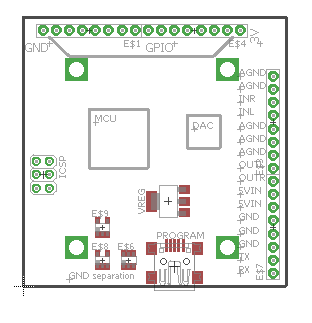

That is much easier, as this is how it comes out of the SMD assembly line. Not sure if there is sufficient demand to motivate a separate product in stock and sales.
The 3.5mm headphone jack would still be there, since that is SMD too.
So people who like this idea, please give this a like, so I get some indication of demand.
Minimal axoloti board
johannes
#6
it would be good for the eurorack effort, not having those big jacks and so.
i'd take another board!
gjvti
#9
Since I missed initial fundraising campaign - for me priority would be availability of fully assembled product
callipso
#10
I'd like to see a 'compact' version of the Axoloti, perhaps a credit card sized board with only pin headers for all the audio and midi connections and with less GPIOs..
johannes
#11
If audio and midi are on pin headers, it 'd probably also need sdcard, usb device and usb host on pin headers, and require quite some work before users can get started. And then, to keep it really compact, it 'd need a higher density board-to-board connector than pin headers and then it needs a custom circuit board to host it....
Axolotiny version for embedding
callipso
#12
I don't think it would be necessary to have the uSD externally as it's not something you disconnect/change often. Also, as opposed to the TRSs and DINs it's quite small.
Inaba
#13
i don't know if this is still needed, but to me it is, as i am wanting minimal modules (only mcu/dac/gnd isolation/usb/volt reg/icsp header and some analog pins broken out)
note: no extra ram! (aka, the bare minimal needed)
here's my personal reasons:
space is a luxury to me
i don't need he midi dins, jack conenctors, microsd, it takes just too much space when i can simply use header pins for the jack sockets and midi.
cost reduction per pcb? (fewer components needed, smaller pcb size)
my plan with a few of these modules would be:
use them as simple oscillators/adsr envelopes/filters/compressor.
while using a axoloti core as effect processor (with the help of the DRAM)
if i need to get this with axoloti core modules on their own, it will:
require more space
require more money(?)
not be used to it's potential (if i use a axoloti core as a polyvoice oscillator, i down't need all the features like DRAM, sd, ect)
quick drawing of what i'd love to have (size: about 50x50mm):

johannes
#14
I could think of a dozen design variations. My design goal was a board that does not require any soldering, feature-rich, and serving as many use cases as reasonably possible. Additional design variations require significant time and investment: design, prototyping, testing, test-jig development, manufacturing, testing, stock... Unless there is a large demand, I will stick to a single "core" variation. Most relevant signals are available on pads, the power/midi section can be cut off, other connectors can be removed to save vertical space.
Inaba
#15
@johannes
you got a point there.
also: just curious, if there's enough people interested in axoloti without the in/out jacks, midi plugs and usb header soldered on, what would the price tag be of a single board?
[Need Help with SPI] Euxoloti for axoloti (Eurorack Module)
johannes
#16
The part cost for these connectors is around 3 euro, and takes about one minute and a half of manual assembly time per board... Offering a version without these connectors complicates stock management and order fulfillment.
gloom_and_glare
#17
So is there any chance a dedicated "core" will ever see the light? Like with just the bare essentials? (Somewhat like so, but with the larger SRAM?)
It would make these kinds of customizations much easier and neater.
thetechnobear
#18
this has been discussed extensively (and commented on by Johannes) in this thread
never say never, but purely as an observer of that thread, Id say its unlikely... (read the above thread for reason)
Diego
#19
It is an open hardware...I think It will not take long until somebody release is own axoli compatible board.
thetechnobear
#20
ok, moved the above posts here, as I think its more appropriate, since was not really about eurorack etc.
@Diego its a possibility, but they will still 'suffer' the same limitations as johannes, sure they can produce their own boards, but if they want to sell them, why do you think their production costs will be lower? Johannes has already said, he thinks it would only reduce the cost by 3-5 euros... and the market seems small, only about 5 people on this thread... so seems production run would be low ... 50 boards?
then of course the software would need to (potentially) be altered if any hardware change was made, and then distributed...
I see it unlikely that more than a few such custom boards would be made, seems much easier to just take a axoloti core, and desolder and remove the parts you don't want.
I think much more likely a eurorack axoloti has viability as a variant, since that will appeal to a new market.
but this is just as a casual observer, so its quite possible/likely I'm wrong.
gloom_and_glare
#21
Sorry, hadn't seen this thread ("brick" sounds like broken ...).
And it's unclear to me why this ( = smaller "core") isn't about eurorack (?)
Anyways, as far as I am concerned it's about not cost but ease-of-integration. And it would be useful of course to have some of the signals available for panel mount sockets (SDIO, USB).
As for DIYing the core .. well, maybe, but unlikely. I suppose there's DIY-friendlier, non-BGA SDRAM, but it's still TSSOP and the market for that kind of thing is really small.
thetechnobear
#22
sorry, I meant it was not specific to eurorack, rather than applicable to eurorack, and specifically about the Euxoloti project.
so just thought this was a better 'home' for discussion about a minimal/stripped down board... and yeah the raw brick, was not obvious to me when I first saw it, so not surprised you overlooked it 
(renamed thread to help others find in the future)
I get your point about integration... and Johannes has said he is very much interested in the DIY/hardware hacking side, so as I said I could be completely wrong, perhaps there is an attractive side to this.
perhaps thats where the discussion is at...
i.e. rather than thinking about stripping down a board, how could a variant be created thats attractive to a significant number of DIYers (or whatever your market is) to make it viable.
for sure I can see the applicability of the modular software environment.
(I dont think, faster or more sdram is really a motive, as arguably these could be both added to a v2 axoloti core board rather than a variant)
Im interested in this side, as id like to do a bit of hardware hacking this year, and being a complete newbie to this area would would love to hear more on things people are doing and how they are doing it with Axoloti.
paul
#23
I think also, that a raw compact core board will be much better for implementing axoloti to the eurorack world. But the break away part design from johannes is a good compromise. I think, it will take time that people know, what they are want to use their axoloti for.
Last friday, I visited schneidersladen in berlin and talked with some people about the axoloti. They haven't heard about it before, but after it, they were very interested in it. They also said, that they like the graphical interface method but don't want to work on electronics.
An other big potential which I want to mention is, that the axoloti and its environment is a good place for young people. At the moment the graphical interface is a bit rough and unappealing but on the other side it has many potential (e.g. learning curve, open source, price, community etc.). In the future, I want to develop a I/O board, where you can easily connect switches, potis etc. by simple terminals without the fear of overvoltage the axoloti inputs. Like builder midi core from livid instrument.
{kind=link}
thetechnobear
#24
the LIVID builder stuff is interesting... its attractive to a newbie like me, as they have kits so you know you have all the right parts, and then has a well documented build.
(btw, i wouldn't say LIVIDs UI for the builder range looks very slick either  )
)
I think if there was a similar thing (extension board?) for axoloti Id be very interested.
I did wonder a while back about ordering some solderless header pins, this would open axoloti up, without the fear of me getting solder all over the board Im sure they are not reliable for heavy use, but surely ok for prototyping etc.
(perhaps axoloti v2 could have female headers on-board)